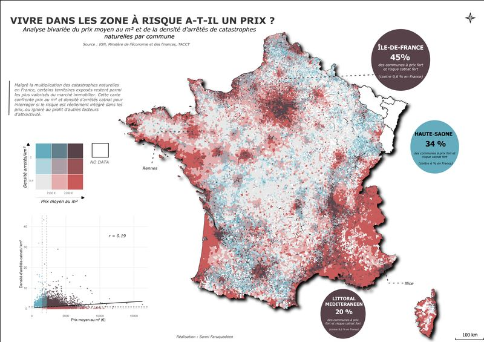

Faruquadeen Sanni
Étudiant en Master de Géomatique
Je transforme des données spatiales en cartes, en atlas et en analyses de territoire. Master SIGAT à l'Université de Rennes 2.

Projets sélectionnés
Atlas, analyses de territoire et missions réalisées en stage.
Cartothèque
Cartes thématiques, cartes de flux, analyses de mobilité, géovisualisation.
Compétences
Les outils que j'utilise pour collecter, traiter, analyser et représenter des données géographiques.
SIG et télédétection
Cartographie
Données géographiques
Programmation et web
Parcours
Des stages de cartographie et de SIG en France et en Côte d'Ivoire.
Photo-interprète et contrôleur de surface
ASP · ChantepieGéomaticien cartographe (stage)
DDSEN49 · AngersCartographe (stage)
France Terre d'Asile · AngersGéomaticien et cartographe (stage)
Southern IT Consulting · Abidjan